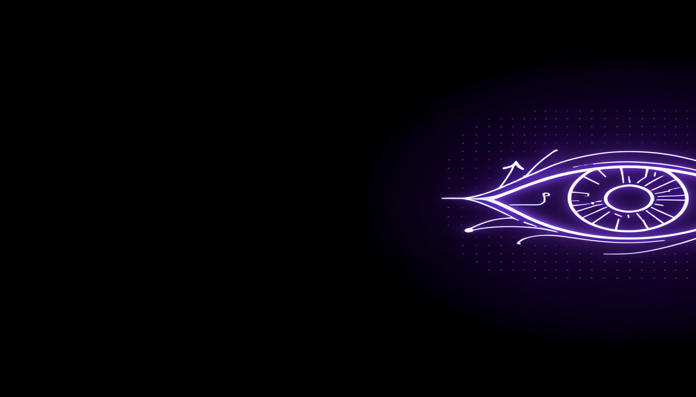

.-" "-.
/ \
| |
|, .-. .-. ,|
| )(_o/ \o_)( |
|/ /\ \|
(_ ^^ _)
\__|IIIIII|__/
| \IIIIII/ |
\ /
`--------`
A single-file, cross-platform command-line tool that reimplements the Shinigami Eyes social-profile label filters — reading the shipped bloom-filter data to tell you whether a profile identifier carries a trans-friendly or anti-trans signal, or neither. Fully offline. Privacy-preserving by design.
One script. Two privacy-preserving ideas carried over from the upstream project.
Point it at a profile URL or handle and it answers from the bundled bloom filters — no network, no account list, no enumeration.
The dataset is a fixed-size bit array plus k hash functions. Membership is testable; the underlying account list is not recoverable.
Submitting labels uses RSA-OAEP-256 + AES-CBC-256 to the project's public key, so the cloud provider cannot read what you send.
Every report is confirmed one-by-one at an interactive prompt. No flag, pipe, or environment variable can skip that step.
“Neither” is not a verdict. A neither result means the key is absent from the shipped data — a coverage gap, never a statement about any person. A positive label reflects a third-party crowd-sourced signal, not a verified fact.
No install, no build step. Standard library plus cryptography (only for report).
Exit codes
| Code | Meaning |
|---|---|
0 | success |
1 | runtime / usage error, or report POST failed |
2 | an input became a non-keyable domain/URL (--fail-on-unsupported) |
3 | reporting aborted (no interactive confirmation available) |
The report path posts only to the upstream endpoint using the upstream encryption scheme. The port authors run no server.
Anyone who removes, bypasses, or automates that prompt operates outside this project's
safety model and the upstream intent. The wire label tokens use the upstream server's
expected JSON keys (t-friendly / transphobic); they appear only at
the server boundary.
Two licenses, cleanly separated.
The algorithm and format knowledge reimplemented here — the FNV-1a hash contract, the bloom-filter byte layout, the identifier normalization rules, and the submit-vote encryption envelope — originate from Shinigami Eyes, which is MIT-licensed. The verbatim MIT text is bundled and its copyright notice kept intact, as MIT requires.
The new code, documentation, packaging, and legal text carry the Creative Commons Attribution-NonCommercial-ShareAlike 4.0 International license. Share and adapt under the same terms, with credit and no commercial use.
Acknowledgements. Another Note ports the Shinigami Eyes browser extension. We thank the original authors and contributors for the design, the privacy-preserving architecture, and the public dataset. Please support the original authors via their repository: github.com/shinigami-eyes. No verified first-party donation URL was located at writing time.